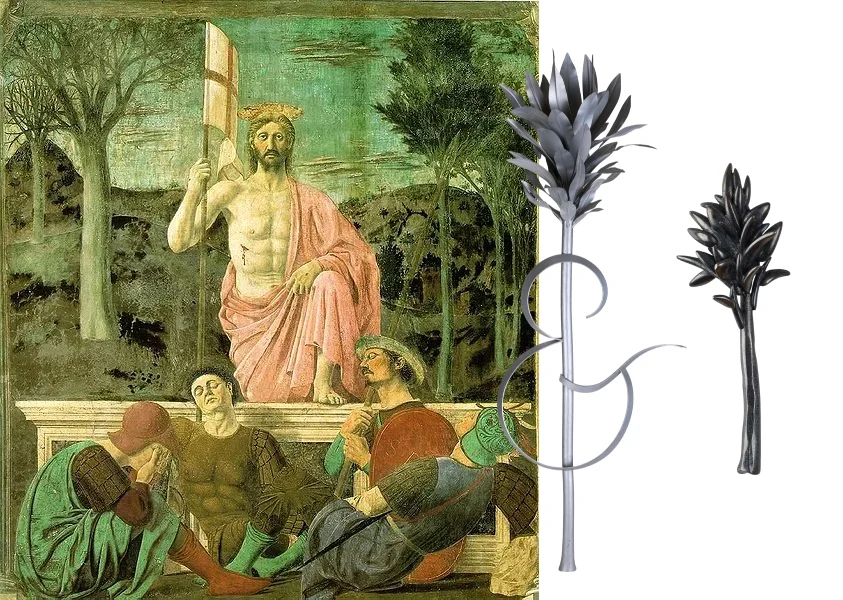

Biography
I am a Vermont-born watercolor painter whose practice began in the wake of a childhood accident that left me with a spinal cord injury. Painting with a brush held in my mouth became both an outlet and a way of rediscovering what was possible. My father, Gilbert “Geebo” Church, an artist himself, recognized in watercolor the possibility of a new form of expression and independence — a practice still physical, yet largely my own — and offered the guidance and encouragement that helped bring it forward.
Working with 4 x 6–inch formats, my paintings explore the tension between control and acceptance. Watercolor is a medium that moves on its own terms — bleeding, pooling, and surprising the brush that guides it. The more I work with the medium, the more I recognize a rhythm that feels both familiar and instructive. Over time, I’ve realized that this process — one of discovery and adjustment — has brought me closer to my father’s approach: beginning with a vision, guided by intuition, and allowing the painting to reveal itself. In his words: “The work will tell you what it wants; you just have to be patient enough to listen.” I’ve come to recognize that his words speak more than just painting; they reflect a way of living. They are a reminder that patience and persistence can shape not only the creative process but also the way we meet what life places before us.
My paintings are less about demonstrating what is seen than about capturing what is felt — a record of time, movement, and response. Each piece becomes both an exploration and a conversation, inviting others to find their own meaning in the shapes and colors that emerge.
The work will tell you what it wants; you just have to be patient enough to listen.

Tree of Life
The Arbor & Eye insignia evolved from a sculpture inspired by imagery in Piero della Francesca’s fresco The Resurrection of Christ in Sansepolcro. Its form draws from the living trees, Arbor Vitae, to the right of Christ and combines the vertical line of the tree trunk with the spear held by the sleeping guard.
The original pin was designed and fabricated by Sharon Church shortly after her nephew Ned was injured in a car accident. Over time, the insignia evolved into the foundation for the name Arbor & Eye and its broader visual identity, gradually coming to embody endurance, renewal, and continuity within Ned Church’s work.
Process
Each painting develops through layering, revision, and response over time.
Using watercolor, I allow the movement of pigment, transparency, and unintended shifts within the material to shape my compositions. The process remains open and iterative, balancing structure with unpredictability.
The small scale of the work creates a slower and more intimate process, where subtle changes in tone, texture, and balance become increasingly important over time.